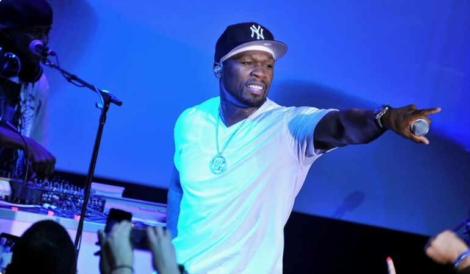

Curtis James Jackson (50 cent)
Su nombre artístico se inspiró en el criminal juvenil Kelven “50 Cent” Darnell
Por Alma Brescia
Mejor conocido como 50 Cent, es un rapero, actor, emprendedor, productor ejecutivo y cantante que nació el 06 de julio de 1975 en Queens, Jamaica del Sur, Nueva York, Estados Unidos. En función de una adolescencia muy dura en las calles de Nueva York, criado por sus abuelos maternos, ya que habían asecinado a su madre y su padre nunca conoció, 50 Cent fue haciéndose habitué de las mismas y adoptando la mayoría de los códigos y hábitos marginales. Alrededor de los 12 años ya se dedicaba a la venta de crack en las calles de Queens para pagar sus gastos y a los 15 años fue arrestado por primera vez por la comercialización de drogas. Después de recapacitar, dejó el tráfico de drogas para comenzar con lo que fue su verdadera pasión, el hip hop.
Inicios en la música
Se dieron cuando empezó a rapear en el sótano de un amigo. En el año 1996, un amigo lo presentó a Jam Master Jay de Run-DMC, quien estaba organizando su sello musical “Jam Master Jay Records”. Jay le enseñó cómo poder contar los compases, escribir los coros, estructurar las canciones, y hacer los registros.
El éxito de 50 Cent comienza cuando Nas escucha su tema "How To Rob" y lo invita a su gira promocional del álbum "Nostradamus". Su primer LP tuvo una edición normal que tituló "Guess Who's Back?" el cual se edita en el año 2002 bajo el sello discográfico Full Clip y respaldo de G-Unit. En función del éxito recibido por este disco recibe el apadrinamiento del propio Eminem quien lo convenció de firmar para su propio sello. Gracias a Eminem conoce a Dr. Dre y graba "Get Rich or Die Tryin" el cual se editó a comienzos del año 2003 y fue un éxito inmediato, alcanzando el primer puesto en el Billboard 200 Así es reconocido por muchos como el mismo sucesor de Eminem, este rapero de origen humilde es el preferido de muchos de los á mbitos underground americanos amantes del género rap y del hip hop, uno de los mejores exponentes del género.
''Soy un escritor, soy un luchador''
AUTOR
''Soy un escritor, soy un luchador''
AUTOR
Filmografía
Actor de voz en videojuegos como:
Actor en programas de televisión como:
LOS NUEVES DISPAROS (2000)
Estaba aparcado afuera de la casa de su abuela en el sur de Jamaica, junto a su amigo, quien le pidió que ingresara a la casa a buscar unas joyas. Ese mismo día, el 20 de junio del 2000, un hombre armado, presuntamente Darryl “Hommo” Bau, se estacionó cerca de la casa. Cuando 50 Cent regresó, Darryl disparó a quemarropa contra el rapero 9 veces usando una pistola 9 milímetros, las heridas fueron a varias partes de su cuerpo: mano, brazo, cadera, ambas piernas, pecho y mejilla izquierda. Por la herida en la cara se adormeció su mejilla, perdió una muela y oscureció su voz.
Se dice que la posible causa de este hecho fue que''50 Cent'' hizo la canción “Ghetto Qu’ran”, donde se atrevió dar nombres de narcos, además de pedirle perdón al Señor por lo que hizo durante su juventud.